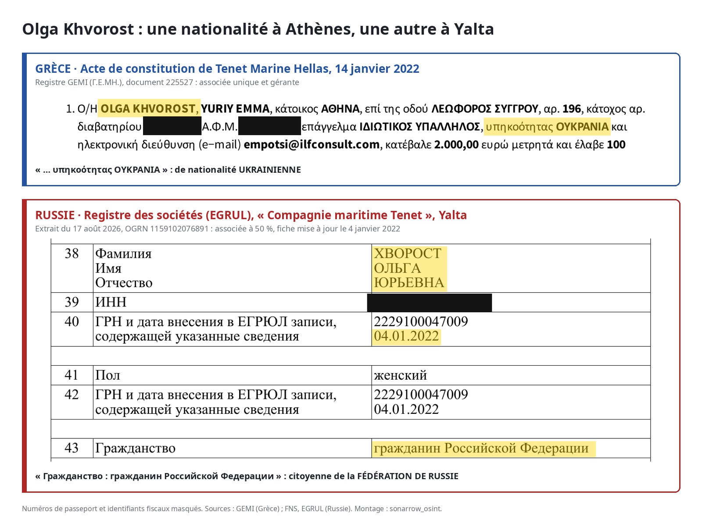

Le 26 août 2026, sur Sea_Anchorage, une chaîne Telegram où les agences maritimes publient leurs offres, un bureau de Novorossiisk cherche un équipage complet pour un pétrolier. Dix postes, du capitaine à l’électricien. Première condition : un « Russian crew ». Seconde condition : accepter d’entrer en « zone à haut risque », car le navire « fera route vers la mer Noire » (annonce).
L’annonce ne nomme pas le navire mais indique un numéro IMO, l’identifiant international des navires, correspondant à celui de l’ENDLESS (IMO 9315446), ex-SPRING, un pétrolier inscrit sur la liste noire de l’Union européenne depuis le 21 mai 2025 (règlement (UE) 833/2014, annexe XLII). La veille, il avait jeté l’ancre devant Suez (VesselFinder).

L’annonce est signée « Tenet Marine Hellas – NVR », NVR pour Novorossiisk. Il s’agit d’une société grecque, alors même que le droit européen interdit à toute société de l’Union de fournir l’équipage des navires de la « flotte fantôme » russe.

Ce terme désigne les pétroliers aux propriétaires opaques qui transportent le pétrole russe malgré les sanctions occidentales. Le 23 juillet, l’Union européenne a sanctionné pour la première fois des agences de recrutement maritime, dont Aquamarine Ship Management, établie elle aussi à Novorossiisk (Journal officiel de l’UE). Une semaine plus tôt, « The Insider », avait recensé plus d’un millier d’offres d’emploi pour la flotte fantôme sur Telegram et fait de ces agences le maillon oublié des sanctions (The Insider). Notre équipe a identifié les personnes se cachant derrière ce type de recrutement illégal.
Le rôle de Tenet
Chronologie des annonces pour six pétroliers sanctionnés en cinq mois
L’ENDLESS n’est pas un cas isolé. D’avril à septembre 2026, le bureau de Novorossiisk publie des offres pour six pétroliers sanctionnés. Quatre sont inscrits sur la liste noire européenne ; les deux autres, l’IN (IMO 9235892) et l’ACERS (IMO 9301902), ne figurent sur la liste ukrainienne que sous leurs anciens noms, WIND et CERS. Aucune annonce ne mentionne les sanctions, se contentant de préciser le nom du navire ou son numéro IMO.
La première offre date du 20 avril, sur le site dédié aux offres d’emploi dans le domaine maritime « Maritime Zone » (annonce). Tenet recherche alors un second capitaine, de nationalité russe, pour le BLUE (IMO 9236353), un pétrolier de 165 000 tonnes inscrit sur la liste européenne onze mois plus tôt.
Le 28 juillet, cinq jours après la sanction d’Aquamarine, le même site publie sous le logo de Tenet une offre de chef mécanicien pour le SUN (IMO 9293117) (annonce). Ici encore, les candidats doivent être de nationalité russe uniquement.
À la mi-août, les offres commencent à être publiées sur Telegram. Le SUN revient trois fois : un chef mécanicien à embarquer à Suez, puis un second capitaine et un ajusteur à embarquer à Oust-Louga, le grand terminal pétrolier russe de la Baltique (19 août, 20 août, 3 septembre).
Le 19 août, une autre annonce cherche un chef mécanicien pour un « pétrolier de brut de 109 000 tonnes », sans le nommer (annonce). Nous l’avons identifié comme étant le TSITRIN (IMO 9437983), à quai deux semaines plus tôt à Primorsk, un autre terminal pétrolier russe (voir l’encadré Méthodologie).
L’offre concernant l’ENDLESS est publiée une semaine plus tard.
Les pétroliers sanctionnés des annonces Tenet (2026)
| Navire (IMO) | Anciens noms | Sanctions | Annonces « Tenet Marine Hellas – NVR » |
|---|---|---|---|
| BLUE (9236353) | — | UE 21/05/2025 ; R.-U. 09/05/2025 ; Ukraine | 20/04/2026 |
| SUN (9293117) | — | UE 21/05/2025 ; R.-U. 21/07/2025 ; Ukraine, Suisse, Canada | 28/07*, 19/08, 20/08 et 03/09/2026 |
| TSITRIN (9437983) | OCEAN PRINCE, NAN HAI, CAI YUN | UE 21/05/2025 ; R.-U. 09/05/2025 ; Ukraine, Suisse, Canada | 19/08/2026** |
| ENDLESS (9315446) | SPRING, MUM | UE 21/05/2025 ; R.-U. 21/07/2025 ; États-Unis ; Ukraine, Canada | 26/08/2026 |
| IN (9235892) | WIND | Ukraine | 14/08/2026 |
| ACERS (9301902) | CERS | Ukraine | 21/08/2026 |
* Annonce publiée sous le logo de Tenet, sans signature. ** Navire identifié par ses caractéristiques, l’annonce ne le nomme pas.
Une activité débutée avant les sanctions
À la lecture des CV publiés sur le site « Crewdata », on constate que des marins déclarent avoir embarqué par l’intermédiaire de Tenet, entre 2022 et 2024, sur quatre pétroliers sanctionnés depuis par Londres ou par Bruxelles. Sur l’un d’eux, le FOTUO (IMO 9293959), deux seconds mécaniciens se succèdent au même poste. Le premier est recruté par le bureau du groupe à Simferopol, en Crimée, le second par celui d’Odessa.
Les pétroliers où des marins déclarent avoir été placés par Tenet avant la sanction (CV publiés sur Crewdata)
| Navire à l’embarquement → nom actuel (IMO) | Embarquements déclarés | Sanctions ultérieures |
|---|---|---|
| RAPTOR → CHENG HE (9304629) | 12/2022 – 08/2023 | R.-U. 17/06/2025 ; UE 24/10/2025 |
| PANTHER I → BULL → TORERO M (9292503) | 06/2023 – 11/2023 | R.-U. 17/12/2024 ; UE 25/02/2025 |
| FOTUO → DUOS (9293959) | 12/2023 – 06/2024 (deux marins successifs) | R.-U. 09/05/2025 ; UE 21/05/2025 |
| SELIGER → ASTERAS (9402263) | 11/2023 – 08/2024 | R.-U. 06/08/2026 |
Une vitrine au Pirée
Tenet Marine Hellas existe bien sur le registre des entreprises en Grèce (registre GEMI) : créée le 14 janvier 2022 avec 2 000 euros de capital, elle a d’abord eu pour siège un centre de domiciliation d’Athènes, puis une adresse au Pirée. De 2022 à 2024, elle ne déclare ni salarié ni chiffre d’affaires.
Depuis mai 2026, les quarante annonces publiées par le bureau de Novorossiisk sur la chaîne « Sea_Anchorage », suivent toutes le même modèle : en-tête en russe, téléphone russe, signature « Tenet Marine Hellas – NVR ». Ainsi, hormis le mot « Hellas », seul le domaine des adresses électroniques, @tenetmarine-hellas.gr, évoque la Grèce.
Sur l’annuaire Maritime-Union, Tenet Marine Hellas, à l’adresse de son siège du Pirée, présente elle-même Novorossiisk comme l’une de ses succursales, avec Nicosie et Odessa (fiche Maritime-Union). Sur la plateforme d’emploi Maritime Zone, sa fiche indique tenetmarine-hellas.gr comme adresse internet (fiche Maritime Zone). Pourtant, aucun site n’existe à cette adresse, seulement une page d’attente de l’hébergeur. Le domaine n’est donc utilisé que pour les adresses électroniques des recruteurs.
Il semblerait donc que le positionnement de Tenet comme entreprise grecque ne soit qu’une vitrine servant à éloigner les soupçons de ses liens avec la Russie.
Le recrutement pour des navires sanctionnés : un délit en Grèce
Comme démontré précédemment, les annonces montrent que Tenet Marine Hellas cherchait à équiper des navires de la liste noire européenne, ce que le règlement 833/2014 proscrit (article 3s, paragraphe 1, point d). En effet, depuis 2025, la Grèce fait de la violation des sanctions européennes un délit : les dirigeants encourent la prison, la société une amende qui peut atteindre 40 millions d’euros (loi 5232/2025). Tenet Marine Hellas ne figure pour autant sur aucune liste de sanctions.
Qui est derrière Tenet ?
Deux associés
Le groupe dit recruter des marins depuis 1993. Pourtant, la société d’origine du groupe, la « Compagnie maritime Tenet », n’est immatriculée à Odessa qu’en juillet 2010 (registre ukrainien, via YouControl). Depuis, deux noms reviennent d’un registre à l’autre, ensemble ou séparément.
Le premier, Andrii Dukhno, est à la tête du groupe. Directeur de la société d’Odessa depuis sa création, il en détient 60 %, et dirige aussi celle de Yalta depuis 2016. La seconde, Olga Khvorost, est son associée à Odessa, détenant 40 %. C’est elle qui porte la société grecque, dont elle est l’associée unique et la gérante.
En 2014, la Russie annexe la Crimée, mais le groupe reste dans la région. Il garde alors un bureau à Yalta. Un autre bureau, situé à Simferopol, se présente comme « Tenet Marine Company Ltd, Russia » : code postal, téléphones et site sont russes. Dès septembre 2015, ce bureau publie des offres d’emploi sous le même numéro de licence que la société d’Odessa. Entre-temps, le 21 mars 2015, Andrii Dukhno et Olga Khvorost ont créé à Yalta une société de droit russe, elle aussi baptisée « Compagnie maritime Tenet », qu’ils détiennent à parts égales.
Quelques années plus tard, en mars 2019, le groupe entre dans l’Union européenne avec Tenet Marine Kypros, dont Andrii Dukhno était administrateur (registre chypriote, via OpenCorporates). Il s’agit de la seule société du groupe où la piste se perd : ses parts ont été cédées et ses dirigeants changés en janvier 2025, sans que nous ayons pu établir au profit de qui.
En janvier 2022, six semaines avant l’invasion de l’Ukraine, Tenet Marine Hellas est implanté en Grèce.
![Schéma du groupe Tenet. Olga Khvorost détient 100 % de Tenet Marine Hellas (Grèce, créée le 14/01/2022), 40 % de la Compagnie maritime Tenet d'Odessa et 50 % de la société de Yalta. Andrii Dukhno détient 60 % de la société d'Odessa, qu'il dirige, 50 % de la société de Yalta, qu'il dirige, et a été administrateur de Tenet Marine Kypros (Chypre). Le bureau de Simferopol, « Tenet Marine Company Ltd, Russia », utilise la même licence que la société d'Odessa. Le bureau de Novorossiisk, « Tenet Marine Hellas – NVR », est déclaré comme succursale de la société grecque et publie les offres pour quatre pétroliers de la liste noire de l'UE : BLUE, SUN, TSITRIN et ENDLESS.](../../assets/img/schema-groupe-tenet_fr.png)
Effacer la Russie
En 2021, le site du groupe s’ouvrait sur la bannière « Cyprus, Greece, Ukraine, Russia ». Sa page Contacts donnait l’adresse d’un représentant à Novorossiisk. Au printemps 2022, « Russia » quitte la bannière et l’adresse disparaît (archives du 21 octobre 2021, du 8 avril 2022 et du 29 mai 2022). Aujourd’hui, le site revendique des bureaux « dans 3 pays », excluant donc la Russie.
Pour autant, des traces restent et jusqu’en 2024, la politique de confidentialité mentionne toujours « notre bureau en Russie » (archive du 24 avril 2024). En juin 2026, la page « Certificats » affiche toujours ceux du Registre maritime russe, l’organisme public qui certifie navires et sociétés maritimes (archive du 16 juin 2026).
Le groupe a ainsi tenté d’effacer ses liens avec la Russie, commençant par son site, sans succès.
Ukrainienne à Athènes, Russe à Yalta
Dans l’acte de constitution grec, Olga Khvorost n’a qu’une nationalité : ukrainienne, passeport ukrainien à l’appui. Le registre russe des sociétés, l’EGRUL, dit autre chose : pour la société de Yalta, à la ligne « nationalité », il inscrit ses deux associés comme « citoyen de la Fédération de Russie ». Là encore, les registres russes trahissent les liens de Tenet avec la Russie.


Le 9 décembre 2021, Olga Khvorost prend un vol d’Athènes pour Moscou. Le 4 janvier 2022, l’EGRUL inscrit un nouveau document d’identité russe à son nom. Le 14 janvier, elle crée la société grecque par voie électronique, en se déclarant uniquement ukrainienne. Des bases de données russes issues de fuites lui attribuent 43 vols de ou vers Moscou entre 2016 et 2023 : vers Athènes et Larnaca jusqu’en 2021, puis via Istanbul.
Andrii Dukhno suit la même trajectoire. Selon ces mêmes bases de données, il reçoit un passeport intérieur russe en juin 2014. Le 5 octobre 2022, sept mois après l’invasion, il obtient un passeport international russe. Dix-sept jours plus tard, il s’envole de Sotchi pour Istanbul.
La passeportisation forcée de la Crimée, en 2014, peut expliquer pourquoi il possède un passeport intérieur mais elle n’explique ni son passeport international, qu’il faut demander, ni la société créée à Yalta sachant que l’EGRUL l’enregistre bien comme une création, non comme la réimmatriculation d’une société existante (EGRUL, OGRN 1159102076891).

Aucun registre ne présente l’ensemble des éléments, mais c’est lorsqu’on les croise que tout devient clair : le registre grec voit une Ukrainienne à la tête d’une société sans activité déclarée, tandis que le registre russe voit deux associés russes en Crimée et que le registre ukrainien voit une agence d’Odessa.
Olga Khvorost et Andrii Dukhno ne se cachent pas derrière des prête-noms. Ils signent les statuts, détiennent les parts, posent à Athènes à une conférence du secteur. Ce qu’ils cachent, c’est la Russie : ukrainiens à Athènes, citoyens russes à Yalta, ils recrutent illégalement depuis Novorossiisk des équipages russes pour des pétroliers que l’Europe a bannis.
Ainsi, au-delà des sociétés qui s’occupent des bateaux, on peut s’intéresser aux entreprises qui recrutent les marins : sans recrutement pas d’équipage, sans équipage, pas de bateaux. Les navires sont sanctionnés, certes, mais les fautifs sont surtout ceux qui sont chargés du recrutement des marins. D’abord opaque, une recherche approfondie permet d’éclaircir qui se cache derrière ces agences de recrutement. Pourtant souvent enregistrées en Europe, il est possible d’établir des liens clairs avec la Russie, et avec la dark fleet. Cette investigation ouvre donc la voie à de nombreuses autres, Tenet n’étant pas un cas isolé, afin de mettre la lumière sur ces agents agissant en toute impunité sur le sol européen.